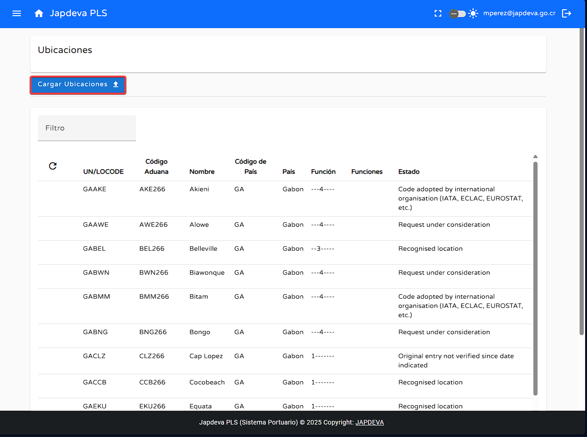

Bienvenido a la guía de usuario para la pantalla Ubicaciones del sistema PLS. Esta guía está
diseñada para ayudarte a utilizar y comprender de forma sencilla y directa las funcionalidades que ofrece
esta pantalla.
1. Introducción
Localizada dentro del submenú de Administración de Datos permite realizar acciones tales
como: Agregar ubicaciones, filtrar, visualizar y refrescar la información en pantalla.
Consejo: Esta guía está diseñada para ser leída en orden, pero puedes saltar a las
secciones que necesites usando el menú de contenido.
2. Funciones principales
1
Cargar ubicaciones
Para realizar la carga de ubicaciones se debe de hacer lo siguiente:
Nos posicionaremos sobre el botón Cargar
Ubicaciones

Damos clic sobre el y se desplegará una ventana en la cual se puede seleccionar un archivo con la
información de las ubicaciones que se desean cargar.
Una vez dentro de esta ventana se debe de dar clic sobre el botón Elegir
archivo
Una vez dado el clic sobre el botón se desplegará la pantalla de archivos locales del computador,
donde se puede seleccionar el archivo que se desea cargar.
Con la selección del archivo deseado realizada lo que sigue es dar clic sobre el botón Subir archivo
En caso contrario que se desee abortar la ejecución de la carga se puede realizar simplemente dando
clic sobre el botón Cancelar
Advertencia: Solo se permiten archivos con extensión .csv
además debe de cumplir con lo estipulado por el
UN/LOCODE.
2
Realizar búsqueda mediante filtro
Para realizar la búsqueda mediante filtro se debe hacer lo siguiente:
Posicionar el cursor sobre el espacio en blanco de la pantalla ubicado en la parte superior
izquierda de la tabla donde se esta por defecto la leyenda Filtro.
Damos clic sobre este espacio en blanco.
Ingresamos los criterios de búsqueda que se deseen realizar.
Si existe relación entre los criterios de búsqueda y la tabla se reflejará de
manera automática en
la tabla el resultado. Como se ve en la imagen anterior.
3
Función refrescar información
Para lograr la función de refresco de manera exitosa se debe de hacer lo siguiente:
Ubicamos nuestro cursor sobre el botón de refresco que se encuentra en la parte superior izquierda
de la tabla en pantalla.
Al darle clic se reflejará de manera automática la información más reciente en la tabla presente en
pantalla.
4
Visualización de información en pantalla Ubicaciones
Para brindar una visión más clara y entendible de los diversos campops que componen la tabla reflejada en
pantalla se explicarán a continuación de forma resumida cada uno de estos.
UN/LOCODE: Código de la ONU que identifica ubicaciones clave en comercio y
transporte, como puertos y aeropuertos. Lo gestiona la UNECE.
Código aduana: Código respectivo de la aduana según el código UN/LOCODE
relacionado.
Nombre: Nombre de la ubicación.
Código de país: Código en letras de dos caracteres correspondiente al país de la
ubicación.
País: Nombre del país de la ubicación.
Función:
PREGUNTAR
Funciones:
PREGUNTAR
Estado: Estado en el que se encuentra ante los ojos internacionales. Algo así como
permisos y restricciones.